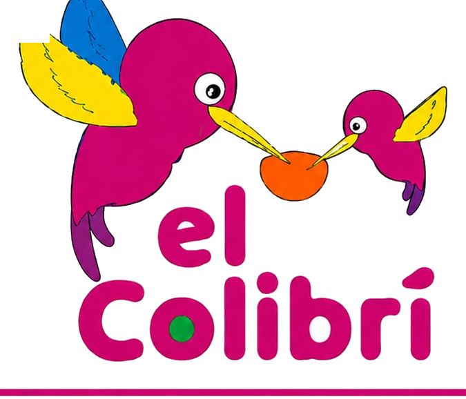

Bienvenidas familias
El Colibrí, ahora
también en tus manos.
Te damos la bienvenida a nuestro Sistema de Gestión. Aquí podrás acompañar, día a día, todo lo que vive tu pequeño en el centro.
Ingresar al sistema →
Usa el código de acceso que te entregó el centro
Centro El Colibrí
Educación Inicial y Apoyo Psicológico · Cuenca